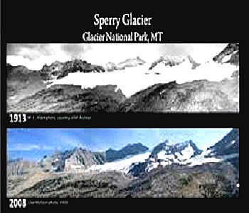
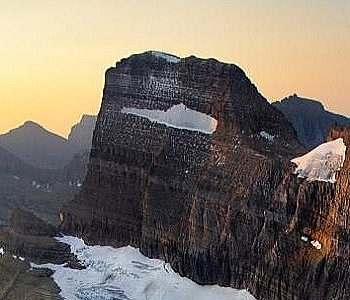

miljö
miljö
| HOME | ABOUT US | YOUR ROLE | CONTACT US |
Dates to Remember:
. World Habitat Week- October 1st Week
.World Environmental Day- 5th June
Climate change is causing Earlier Springs in National Park:
 
================================================================================================================================
The National Park Service was created to protect and preserve the United States’ natural wonders. But what happens when climate change starts to alter these sites?
On Thursday, U.S. Interior Secretary Sally Jewell announced a new report revealing that three-quarters of 276 national parks are experiencing an earlier onset of spring. Half of the parks studied are experiencing “extreme” early springs. The report authors discovered this by looking at historical data dating back to 1901. For the parks in the “extreme” category, they found that “the onset of spring earlier than 95 percent of the historical range,” says Jake Weltzin, an ecologist at the U.S. Geological Survey and one of the authors of the report.
================================================================================================================================
Your Mission:
1. Ask Your Family To Use Less Heat and Air Conditioning. Heating our homes in the winter and cooling them off in the summer takes a lot of energy, which is very hard on planet Earth.
2. Save Electricity. To help save the environment there are many easy ways to use less electricity
3. Save Water.
| miljo | facebook | miljo | twitter | miljo | instagram |